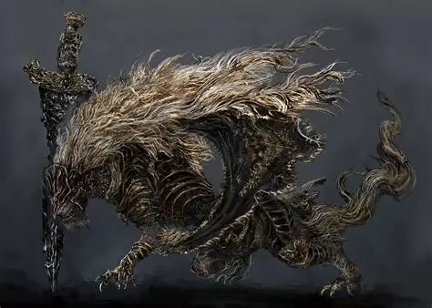

Malekith the black blade
Whats the background of Malekith

Some assassins stole a piece of the Rune of Death from Maliketh.
They used it to kill Godwyn the Golden, the first demigod to truly die.
This event caused chaos and changed the world forever. Feeling
guilty, Maliketh put the Rune of Death into his own body so no one could steal it again.
He became the Black Blade, a warrior filled with death magic.
mans said